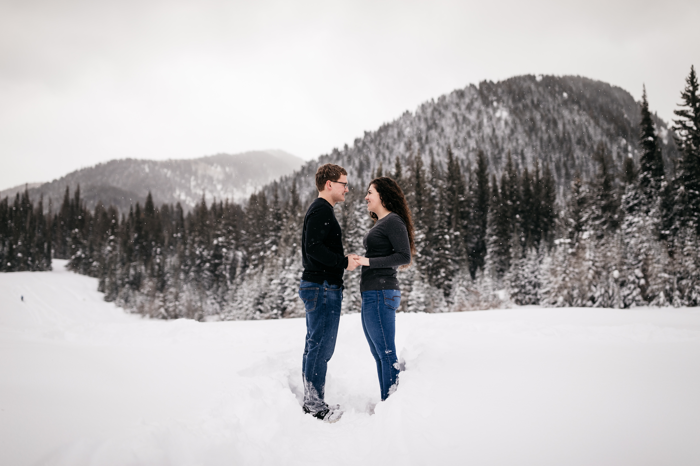

About Me

Writing, reading, and copy editing are my passions. This might sound cliché, but I truly love hearing everyone's unique stories and capturing those unique moments through words. Writing for others' understanding drives my passion. I discovered my love of the English language when I was in elementary school. In high school I took yearbook to explore this love and see if it was something I wanted to do for the rest of my life. My teacher quickly assigned me as the lead editor. This provided me with the chance to learn details in all aspects of the work. I had the privelege of interviewing students and teachers to write captions and feature stories. I designed all the page layouts using InDesign and taught myself the important features of Photoshop to enhance the athletic and school club photos taken by me and other students. I lead classroom discussions and met deadlines. It was during these years taking the yearbook courses that I knew I wanted to stay in the English line of work.
I am a very driven individual, and I am constantly looking to improve my skills through my work experiences. I began my first job in the English field during my second semester of college when I was hired at Brigham Young University-Idaho as a Copy Editor and Reviewer for the online courses. This provided me valuable experience in editing and grammar. Working on various courses of the school’s online program has given me the ability to copyedit and work in a team setting to review new materials. From science courses, English courses, technology courses, and everything in between, I learned the importance and developed the confidence in using the proper ways to research information, validate spellings and meanings of material, and word things in an understandable manner. I was also given the opportunity to work on edits and suggest revisions for a university-level Computer Science textbook. Through meticulous attention to detail, I looked over all 264 pages. I enjoy learning new grammar style guides and seeking full understanding to improve the resulting work.

In the summer of 2019, I was offered an internship with my hometown tourism industry. This internship gave me the chance to write advertisement and informational pieces as I wrote articles for their blog and newsletters. I quickly learned the area and people’s needs and wants in the community in order to come up with ideas for articles. This experience also helped deepen my knowledge of working to keep the industry’s members informed on the happenings of the company. At various times I was asked to write press releases, which needed to include specific information and approval of various organizations. This gave me the ability to synthesize information into short but effective, powerful statements. Another aspect of the internship was writing the company’s newsletters.
BYU-PathwayConnect helped strengthen my ability to create content for learners’ understanding. I reviewed and wrote analyses and helped write material for courses that students in approximately 150 countries learn from. By so doing, I had the privilege of exploring the logic of how things were run while working with others for better product delivery. I also explored community discussion boards in order to create a variety of Q&A articles. I trained employees and developed processes that are now used in other company departments. I loved attending meetings with team members and executives to discuss and plan objectives. Because of my dedication and work ethic, my internship was extended twice.
My understanding of the English and Spanish languages has also increased my understanding of the technical and creative aspects of writing. Performing a year-and-a-half service in California helped my love of languages develop my understanding of grammar and word choice as I taught weekly classes for up to fifteen individuals at a time to learn the English language and taught daily lessons. Teaching helped me learn how to better explain processes and information that the learner had never experienced.
